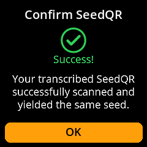

Create SeedQR Backup
Generate compact QR code backups of your seed phrase for convenient storage and recovery.
Complete Step-by-Step Process with All Screenshots
Navigate:
Home → Seeds → [Select Seed] → Backup Seed → View Seed Words


{kind=link}
Choose Format:
“Standard: 25x25” - Larger, easier to scan
“Compact: 21x21” - Smaller, requires more precise scanning

Acknowledge Warning: Confirm that you understand SeedQR contains your complete private key
{kind=link}
Review Complete QR: View the full QR code, then select “Begin” to examine zoomed sections

Navigate All Sections: Use the joystick to review every part of the QR code for accuracy

Complete Review: Press any key to proceed. You’ll see two options:
“Confirm SeedQR” - Verify the generated QR code is correct
“Done” - Return to Seeds main screen
{kind=link}
If you select “Confirm SeedQR”:
The device camera will open to scan the transcribed QR code
Show the transcribed QR image to the camera for verification
The system will confirm whether the correct image was captured

Success Message: 
{kind=link}
Failure Message:

If you select “Done”:
You’ll be redirected back to the Seeds main screen
{kind=link}
⚠️ Security Equivalent: SeedQR codes are functionally equivalent to your written seed backup. Store them with the same security measures - in fireproof safes, safety deposit boxes, or other secure locations.